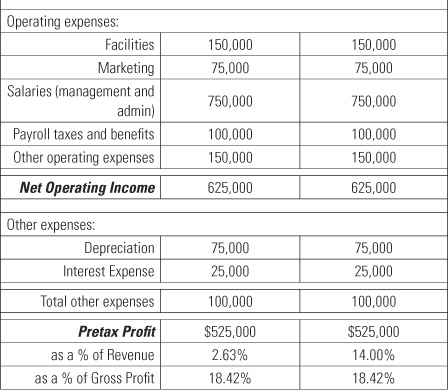

Profit is like oxygen—your business can’t hold its breath very long without it.
You know that you have to pay yourself a market-based wage and get a return on what you own. If you’re not at the point where you can do this, then you’re not profitable enough. Maybe you’re thinking, “I’m committed to my business, and I want to pay myself a market-based wage for the things I do. But I’m not getting enough profit out of the business to be able to do that.” How do you fix that problem?
First you have to understand the concept of profit. Profit is the lifeblood of every business. If your business isn’t profitable, you’re taking business from others and you will eventually fade away. You either have to be profitable or have an endless amount of capital to throw at your business. To keep it simple, when I say profit, I’m talking about pretax profit. This is the profit you make after you take all your sales minus all your costs, before you pay taxes.
If you can’t pay yourself a market-based wage, the first thing to focus on is getting your business profitable. Remember the cow analogy in chapter 1? You can keep your cow healthy and milk it every day, or you can have one big barbecue dinner. Think of the milk as profit. It eventually turns into cash flow, but you have to be profitable first.
A lot of business books and articles use the term EBITDA, which means earnings before interest, taxes, depreciation, and amortization. There’s a game, largely played in the investment banking community, where they recast earnings and say that interest, depreciation, and amortization aren’t real costs. But let’s face it. Unless you’re building a twenty-year production plant that is going to last fifty years, depreciation is a real cost. If you buy a truck for $50,000 and it wears out in five years, you’ll have to replace it. That’s a real cost. Amortization is just a fancy term that spreads the cost of nonequipment over years just like depreciation, but very few entrepreneurs deal with amortized costs that are significant.
Technically, interest is not an operating cost. Generally accepted accounting principles (GAAP) are great, but at the end of the day, entrepreneurs need to be practical. When you write a check for interest, you have to pay real money to cover that check. It takes cash out of your business and typically indicates your business is undercapitalized. This is an important aspect of interest, and it’s the key reason I focus on pretax profit.
Pretax profit is your earnings before taxes. That is the revenue-generating activity that your business produces for your benefit. In most of the businesses I work with, interest, depreciation, and amortization are real numbers, so it’s important to understand that you should ignore EBITDA and focus on your pretax profit.
As I said in chapter 1, revenue is for show, and profit is for dough. I couldn’t care less how much revenue you have. It’s an important number in terms of cash turnover, but we need to focus primarily on your gross profit before we can fix your pretax profit. Gross profit is revenue less cost of goods sold. Contrary to many other accountants, I recommend that you not include any labor costs in getting to gross profit. By keeping labor out of the equation, my definition of gross profit gets you to the number that is the true economic engine of the business.
Cost of goods sold typically includes pass-through costs like finished goods, materials, and subcontractors. These costs will vary dramatically among businesses and industries. By focusing on gross profit instead of revenue, most businesses from any industry can be compared side to side. For instance, I can take a service-based business and compare it to a retailer, and then I can compare the retailer to a building contractor. I can compare the building contractor to a government contractor because when I sell materials, I’m really selling the services of the people who deliver the materials. If I have labor that I want to account for as direct labor (that is, labor that is directly responsible for product or service delivery), I show it on a separate line below gross profit. Gross profit minus your direct labor is then what I refer to as your contribution margin before you pay for your general operating expenses. Don’t think of subcontractors as your labor that you make money from. If I hire a subcontractor, I have to leave profit in the equation for the subcontractor’s business since I am offloading my downtime risk to the subcontractor. Therefore, I am just passing through some of my revenue to the subcontractor. You can show the world all the expanded financials you want, but you have to come back to reality and filter out the cost of goods sold.
If a construction contractor has a $20 million business, that’s great. But by the time he subtracts what he pays for subcontractors and materials, he probably has a $2 million or $3 million business that looks like any other service-based business. That’s why your revenue doesn’t matter. Your gross profit matters most, followed by how you get to pretax profit.
Take a look at exhibit 2.1. It compares a construction contractor with a services business. There is a dramatic difference in their revenue and cost of goods sold, but starting with the gross profit line, they are exactly the same. The construction company survives on less pretax profit as a percentage of revenue because they try to not pay their subcontractors and material vendors until they get paid. It is as if they are a selling agent for the materials and their subcontractors.

Entrepreneur: So are you basically saying I was doing things that I wasn’t admitting to myself that I was doing? But I could get away with it because I was small?
Greg: That’s right. There’s a little bit of business snobbery that goes on because everybody loves this revenue thing. I’m more proud of a business owner who gets a million dollars of revenue and brings home a half-million dollars in profit than someone who’s earning $5 million dollars in revenue but is in debt up to the eyeballs. He can’t even pay himself a salary, and he’s about to go broke.
Every business owner who’s either starting a business or running a business probably instinctively knows what the breakeven point means. The standard definition is when the business has income that equals its expenses. At my firm, we discovered that the breakeven concept is a flawed way of thinking. By the time you’re at the breakeven point, your business is already dead.
After we looked at breakeven analyses, we concluded that when your pretax profit is at or below 5 percent of revenue, your business is on life support. At that point, you’ve got to do something drastic. When it comes to pretax profit, here’s what I’ve found to be true for the vast majority of businesses:
If you’re above 15 percent, you better take it while you can because the market will eventually change. The best businesses tend to operate between 10 percent and 15 percent.
After businesses get beyond $5 million, there are a few outliers. For example, grocery stores have a very low margin and high turnover of goods. Distribution businesses may earn $40 million a year in revenue but only have a 5 percent bottom line. They have very low margins and usually don’t have to pay for what they sell until they collect it from their customers, so they have back-to-back financing.
When you first start a business, you’re just happy to get your salary, and then you’re happy to reach the breakeven point. Later you’re happy to have a little bit of profit. I frequently see entrepreneurs who become ecstatic over that first bit of profit. Then a nasty little realization pops into their heads: I owe taxes on that. But that’s not a bad thing. Remember from chapter 1 that your number one key performance indicator is how big a check you write to the IRS.
There’s a natural differential that takes place between startup and hitting the $1 million-in-revenue mark. This is probably contrary to what many others think, but I believe that once you get to a million dollars of revenue, you’d better be profitable and paying yourself a market-based wage. Keep in mind that a market-based wage is based on what your role is. If you were an executive making a $150,000 a year but now you’re a store manager for Fred’s Lawn Care, your market-based wage isn’t $150,000 anymore.
What happens at a million dollars is that you can no longer take care of all the functional positions. You need enough revenue to cover the costs of paying market wages for people to perform in all of your business’s functional positions. If you can’t cover these costs with your million dollars in revenue, you are not making a profit, and you will quickly go out of business. One of the things I do when I sit down with owners of million-dollar businesses is ask them to put the responsible person’s name beside these eight functional areas:
Time and time again, in a single-shareholder business, the owner takes care of all these functional areas except for one or two undesirable things, which are outsourced to a contractor or delegated to an employee. When there are two shareholders, there is more of a balance between them in terms of jobs and wearing hats. But the bottom line is that when you hit a million dollars in revenue, you have to think about these things.
The exception is if you’re a web-based business startup and you plan to get a gazillion customers and charge them $9 per month. It isn’t easy to keep up with all of that and still make a profit. These kinds of businesses burn through huge amounts of capital before they have a positive cash flow.
Between $1 million and $5 million in revenue is what I refer to as the black hole. This is the time in your business growth when you’re forced to add staffing and infrastructure before you can really afford to. Even if you try to add it as late as possible and maybe even pay for only part-time help, at the end of the day you’re going to drive profitability down and risk destroying your business.
In some ways, leading a business through the black hole that lies between $1 million and $5 million in revenue is like leading a wagon train. Let’s say I’m in Kansas City, and I buy what I think are enough provisions to get through to California. When I hit the Badlands, I think to myself, “I sure hope I have enough provisions to get through that.” If you don’t have enough provisions, one of two things is going to happen, and they are both bad. The first is that you are going to die on the trail. The second is you’re going to have to turn around and go back and get more provisions, learn some lessons, and try it again.
As you grow from $1 million to $5 million in revenue, you are going to hit some badlands, and you are going to need some resources. The most important resource you will need is extra manpower. It doesn’t matter what business you’re in. You have to take care of those eight functional areas no matter what size your business is.
At this point, entrepreneurs often get frustrated about their businesses because of their lack of success in hiring staff to perform high-level functions. It usually goes something like this:
Entrepreneur: I’m looking to sell my business. (The unspoken reason is because they are in the black hole.)
Greg: Okay, great, but what do you think you’re going to do next?
Entrepreneur: I’m going to find a business where I don’t really have to deal with customers or employees. And it will be a business where I really don’t have to work a lot, but it makes me a lot of money.
Greg: Great. If you find that, then you let us all know about it.
It would be nice if we could all find a business that makes a lot of profit and comes without employee and customer headaches. But that’s not realistic. To get through these challenges, you need to prepare your wagon train and have the right provisions. That means you have to hire people with the right skill sets to make the journey with you, and you have to pay them a market-based wage. If you don’t, you’re not going to get through the Badlands in one piece.
When you’re at a million dollars and you start adding the people you need, you feel really happy about it. You’re building a growing business, and you think that anybody you hire will work for you forever. Then you realize at some point, gee, maybe that person isn’t the best fit. You have to understand that people are going to change and that one of the keys to success is continually upgrading your staff.
One of the things I’ve noticed is that the most challenging level of profitability is between $2 million and $3.5 million. I’ve also discussed this with one of my clients who does social science research. A social scientist on his staff uncovered the reason. The need to add management infrastructure seems to naturally occur when you have about twenty employees typically, when you’re between $2 million and $3.5 million in revenue. Before then, you can get away with not having management structures and moving people from a production role to a management role. But when you have about twenty employees, you have to create a different management structure. This situation typically occurs when you’re between $2 million and $3.5 million in revenue.
It’s really expensive to hire the wrong people and then replace them. The more times you have to repeat that hiring cycle, the more expensive and more damaging it becomes. The real cost varies, depending on the situation. The usual scenario is that you add labor cost, and the added labor does not increase revenue. Thus, the cost of the additional labor causes an equal drop in net income. Your existing staff see this impact (whether you share numbers or not) and become afraid that they may be let go as the company struggles. Your most capable employees sense this and leave for better opportunities, leaving you with the least productive people. Your lost profit from your hiring mistake leaves you with no excess capital or borrowing capacity to hire a replacement. So you retrench and you assume the role you tried to hire for. You push to stabilize the company so you can make another hiring attempt as soon as you can.
Here’s what I always tell people: hire slowly, fire quickly. I’m a big fan of the topgrading concept of hiring when it comes to interviewing and selecting candidates. I strongly encourage my clients to read Topgrading: How Leading Companies Win by Hiring, Coaching, and Keeping the Best People by Bradford D. Smart (Portfolio, 2005) to understand the process. I also highly encourage the use of personality profiles as part of the screening process so you understand what makes that person tick. I have tried many different profiles, but I prefer the Caliper Profile from Caliper Human Strategies (www.calipercorp.com).
A lot of growing businesses want to hire someone who has “been there, done that” credentials, but my clients have the least success with this approach. In fact, only about one out of ten has been successful. There are times you must hire experience, for instance, if you need to hire someone to lead your IT department. But usually you need to ask yourself why the “been there, done that” person is available. You’ll always get a story to explain it, but do your homework to find the real reason because it’s likely you’re not getting the full story.
Recently, I was very fortunate to take advantage of a two-day plant tour and program at Dell, the computer manufacturer. I spent a full day with Dell executives, and they said quite a few of their executives were first hired as consultants. This gave the company a chance to get to know them. If Dell decided they wanted to work long-term with a consultant, they hired the person as a full-time executive. This strikes me as a very wise approach for executive-level talent. It gives you time to make sure the consultants don’t have just two ideas they continually repeat; better yet, you don’t end up paying over and over again for the same two ideas.
Another successful approach is hiring young talent and investing in their education. In fact, at my firm we like to hire people straight out of college. They don’t know a lot about anything when they come out of college, but they also do not have any baggage to unlearn. I like having the responsibility to fill their heads full of things I want them to know. A lot of my clients have had their greatest success with young talent who bought into the vision and the dream for the company. These young people are like sponges, and they want to absorb knowledge and information.
You may find the greatest person in the world, but maybe that person isn’t right for the role you’re hiring for. Too often employers want to attach a bad outcome to a specific person. But actually the employer is probably to blame, because he hired the wrong person for the job. I’ve found that most of the people who have gone through my business, as well as many others, go on to find great, happy, and successful careers at other places. They just weren’t the right fit for my business. The goal is to make sure you don’t use a trial-and-error approach to hiring. When you hire someone, you want it to be an informed decision.
Even though we know we have to hire the right people, we still say we want to add those labor costs at the last possible moment. Although you don’t want to add the cost of new employees until you have to, you also have to take your time to find the right people and hire them before your business outgrows your ability to manage all the functional areas by yourself.
Another important resource you’ll need for your journey through the Badlands is capital reserves. You can’t get from $1 million to $5 million on borrowed money. How much of a capital reserve do you need to get your company through the Badlands? In other words, what is your capital safety net? It’s pretty easy to figure out. Calculate how much cash you need to hire the people you need, then estimate how long it will be before your business can pay the new hires and still remain profitable.
I’m going to challenge you to be specific and model the costs on a monthly basis. You must make assumptions about when the revenue should show up and bring you back to your target profit. It is not as simple as using just the new hire cost, because other costs will rise with the added labor. Forecasting is critical, and I’ll cover simple techniques and tools in chapter 10, “Skip the Budget, Learn to Forecast.” It is not sufficient to just forecast net income; you also need to forecast cash flows and capital requirements. This will help you know if you have enough resources to get through the Badlands without raising capital or borrowing money.
What if you don’t have the capital and you still want to make the journey? In this situation, you might decide to go out and raise capital. Think about getting money from investors, friends, family, venture capitalists, or whomever else you can think of. There’s always money in the market. Most venture capitalists will tell you that there isn’t a lack of money but there’s a lack of good business ideas and good deals. But there’s always money for good deals.
I’ve worked with a number of companies that have raised big money to get through the Badlands. Sometimes they spent the money immediately, either because they needed to or the investor pushed them to spend the money to justify the investment. What happens when people raise the extra money but then end up blowing it? They either go for a second round of financing and give up more of the company, or they find a way to rub two dollar bills together to make a profit. That’s how many businesses actually work.
I’ve had other clients who took the investment money and never tapped into it. They put it on their balance sheet and kept on going. This money was their true capital safety net, which is a great strategy. These clients were committed to being profitable every step of the way from the very beginning of the business. They also had reserves in case they hit unexpected obstacles. That’s another key to success.
During this $1 million to $5 million phase—and this goes back to what you learned in chapter 1—you need to pay yourself a market-based wage and get a return on your investment. Your goal is to still be profitable when you go from $1 million to $5 million, even though you’re not going to be as profitable as you were.
You need to reinvest in your business during the $1 million to $5 million phase, but that doesn’t mean you shouldn’t make a profit during this time. It simply means you leave the profits in your business to fund the growth rather than relying on debt or investors. That’s the whole strategy behind paying yourself a market-based wage. You need to live off your wage instead of living off the profits from your business. If you can’t do that, just stay in Kansas City. Don’t take the wagon train to California. You will not make it through the Badlands.
If you don’t have the provisions you need (a capital safety net) and you’ve already started the hiring process, you might find that you have to downsize to fix your business model and get profitable and healthy again. After that, you can try again to make it through the Badlands and reach California.
Once you get past $5 million in revenue, these same principles apply, just with larger numbers. Hopefully, you have developed a team of people to support you in the process. Entrepreneurs who get past $5 million and continue to survive do so because they have great instincts. Some of my clients have phenomenal instincts, and I think one of the reasons they like working with me is that I help them verbalize what they already instinctively know. They just need someone to observe what they’ve done and connect the dots.
When it comes to profitability, you have to balance these ideas. But if you don’t get the owner compensation right, your profit number will be distorted. That distortion decreases as you approach $20 million or $30 million in revenue. But when owners are at $5 million or less in revenue and play games with their compensation, they’re messing up the data that could tell them how healthy their business is. For example, if everything you buy at Sam’s Club goes into a business account even though it’s groceries, your books don’t really mean anything.
Chapter 2 Keys